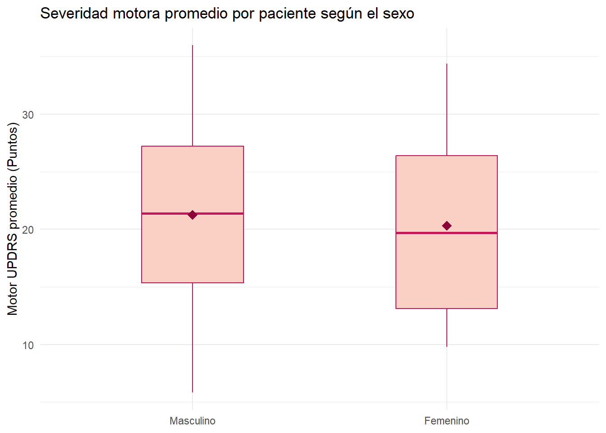
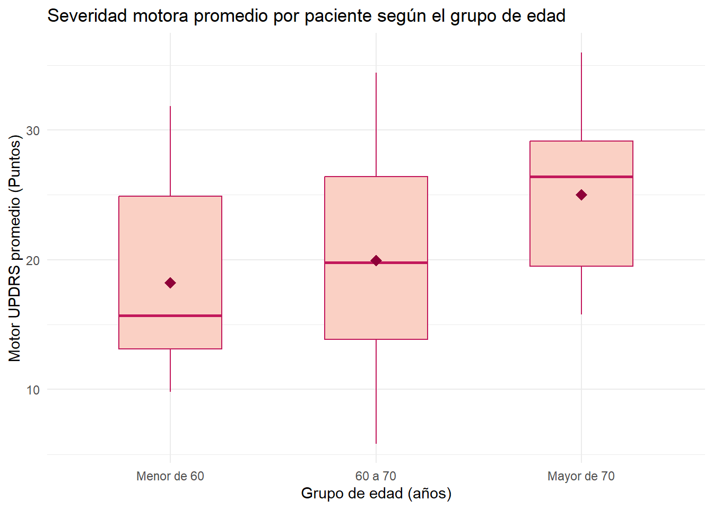
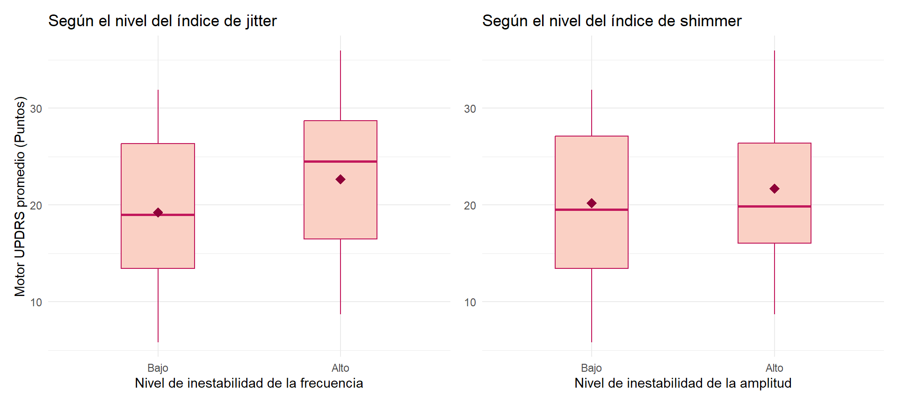
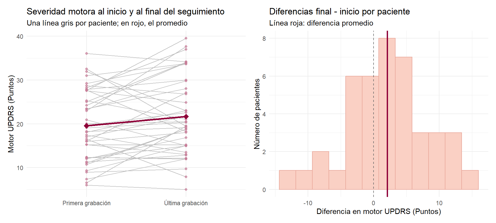
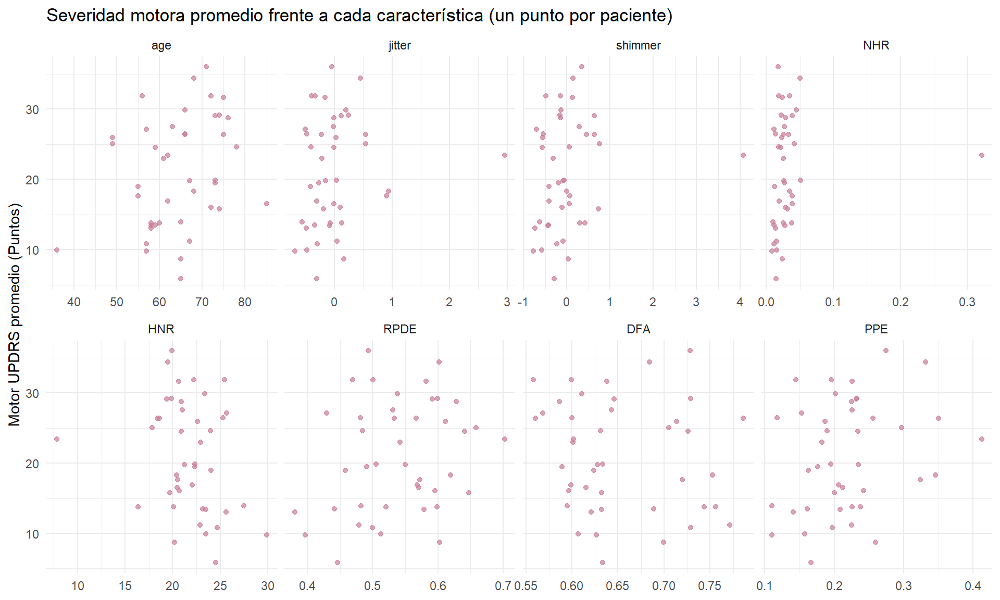
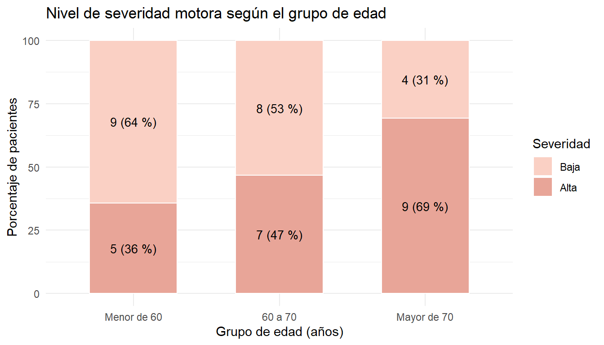

Capítulo 2 Estadística inferencial
Este capítulo cubre los objetivos 5, 6 y 7: revisamos los supuestos de normalidad y homocedasticidad, contrastamos si la severidad motora cambia según el sexo, la edad, la inestabilidad vocal y el momento del seguimiento, probamos la correlación de cada característica con la severidad y la asociación entre el nivel de severidad y las variables categóricas, y medimos el tamaño de cada efecto. En todas las pruebas usamos \(\alpha = 0.05\).
2.1 Unidad de análisis: tabla por paciente
Las pruebas de hipótesis suponen observaciones independientes, y los 5.863 registros no lo son: vienen de 42 pacientes con entre 101 y 168 grabaciones cada uno, que comparten edad y sexo y cuyas puntuaciones motor_UPDRS están interpoladas entre visitas, así que casi no varían dentro de una misma persona. Tratarlos como independientes inflaría el tamaño de muestra y daría p-valores engañosamente pequeños (pseudorreplicación).
Por eso armamos una tabla con un registro por paciente: la severidad motora es el promedio de todas sus grabaciones, y de ahí salen las variables de agrupación: sexo, grupo de edad (menor de 60, 60 a 70 y mayor de 70 años) y nivel de inestabilidad vocal, alto o bajo según el promedio de cada índice quede en la mitad superior o en la mitad inferior de los pacientes. Para comparar el inicio y el final del seguimiento guardamos la primera y la última grabación de cada paciente.
pacientes <- data %>%
arrange(subject., test_time) %>%
group_by(subject., sex, age) %>%
summarise(
n_registros = n(),
motor = mean(motor_UPDRS),
motor_inicio = first(motor_UPDRS),
motor_final = last(motor_UPDRS),
dias_seguimiento = last(test_time) - first(test_time),
jitter = mean(indice_jitter),
shimmer = mean(indice_shimmer),
.groups = "drop"
) %>%
mutate(
grupo_edad = cut(age,
breaks = c(0, 59, 70, Inf),
labels = c("Menor de 60", "60 a 70", "Mayor de 70")),
nivel_jitter = factor(if_else(jitter > median(jitter), "Alto", "Bajo"),
levels = c("Bajo", "Alto")),
nivel_shimmer = factor(if_else(shimmer > median(shimmer), "Alto", "Bajo"),
levels = c("Bajo", "Alto"))
)
head(pacientes) %>%
mutate(across(where(is.numeric), ~ round(.x, 2))) %>%
as.data.frame()## subject. sex age n_registros motor motor_inicio motor_final
## 1 1 Masculino 72 149 31.90 28.20 36.98
## 2 2 Masculino 58 145 13.81 11.08 18.82
## 3 3 Masculino 57 144 27.12 23.44 28.01
## 4 4 Masculino 74 137 15.79 10.74 18.77
## 5 5 Masculino 75 156 31.63 31.00 33.76
## 6 6 Masculino 63 156 27.53 27.88 29.97
## dias_seguimiento jitter shimmer grupo_edad nivel_jitter nivel_shimmer
## 1 169.02 -0.40 -0.49 Mayor de 70 Bajo Bajo
## 2 174.93 0.13 0.30 Menor de 60 Alto Alto
## 3 160.98 -0.50 -0.70 Menor de 60 Bajo Bajo
## 4 161.07 -0.19 0.74 Mayor de 70 Bajo Alto
## 5 161.03 -0.17 0.13 Mayor de 70 Bajo Alto
## 6 175.00 -0.02 0.29 60 a 70 Alto Altopacientes %>%
summarise(
n = n(),
media = mean(motor),
sd = sd(motor),
mediana = median(motor),
RIC = IQR(motor),
minimo = min(motor),
maximo = max(motor),
asimetria = skewness(motor),
curtosis = kurtosis(motor)
) %>%
mutate(across(where(is.numeric), ~ round(.x, 3))) %>%
as.data.frame()## n media sd mediana RIC minimo maximo asimetria curtosis
## 1 42 20.952 7.88 19.83 13.101 5.823 35.99 0.018 1.922##
## Masculino Femenino
## 28 14##
## Menor de 60 60 a 70 Mayor de 70
## 14 15 13## shimmer
## jitter Bajo Alto
## Bajo 16 5
## Alto 5 16Quedan 42 pacientes: 28 hombres y 14 mujeres; 14, 15 y 13 por grupo de edad; y 21 con nivel alto y 21 con nivel bajo en cada índice (las dos clasificaciones coinciden en 32 pacientes, reflejo de la correlación de 0.71 entre los índices). La severidad promedio por paciente tiene media 20.95 y desviación estándar 7.88, la mitad de los pacientes está por debajo de 19.83 puntos, y los valores van de 5.82 a 35.99; es simétrica (asimetría 0.02) y algo plana (curtosis 1.92), sin las dos modas del nivel de registro, porque ahora cada paciente cuenta una sola vez.
Para ver el problema en concreto, comparamos motor_UPDRS por sexo en los dos niveles:
tibble(
nivel = c("Registro (n = 5863)", "Paciente (n = 42)"),
p_valor_t = c(t.test(motor_UPDRS ~ sex, data = data, var.equal = TRUE)$p.value,
t.test(motor ~ sex, data = pacientes, var.equal = TRUE)$p.value),
d_cohen = c(cohen.d(motor_UPDRS ~ sex, data = data)$estimate,
cohen.d(motor ~ sex, data = pacientes)$estimate)
) %>%
mutate(across(where(is.numeric), ~ round(.x, 3))) %>%
as.data.frame()## nivel p_valor_t d_cohen
## 1 Registro (n = 5863) 0.019 0.066
## 2 Paciente (n = 42) 0.721 0.118A nivel de registro sale p = 0.019 con un efecto despreciable (d = 0.07): la “significancia” viene solo de contar a cada paciente unas 140 veces. Por paciente, con una diferencia parecida, p = 0.72. Todo lo que sigue usa la tabla pacientes.
Para no repetir código, definimos dos funciones: el resumen descriptivo por grupo y las tres pruebas de normalidad (Shapiro-Wilk, Kolmogorov-Smirnov sobre datos estandarizados y Lilliefors).
resumen_grupo <- function(datos, grupo, variable = "motor") {
datos %>%
group_by(.data[[grupo]]) %>%
summarise(
n = n(),
promedio = mean(.data[[variable]]),
ds = sd(.data[[variable]]),
mediana = median(.data[[variable]]),
RIC = IQR(.data[[variable]]),
min = min(.data[[variable]]),
max = max(.data[[variable]])
) %>%
mutate(across(where(is.numeric), ~ round(.x, 3))) %>%
as.data.frame()
}
normalidad_grupo <- function(datos, grupo, variable = "motor") {
datos %>%
group_by(.data[[grupo]]) %>%
summarise(
n = n(),
est_w = shapiro.test(.data[[variable]])$statistic,
p_sw = shapiro.test(.data[[variable]])$p.value,
est_ks = ks.test(scale(.data[[variable]]), "pnorm")$statistic,
p_ks = ks.test(scale(.data[[variable]]), "pnorm")$p.value,
est_l = lillie.test(.data[[variable]])$statistic,
p_l = lillie.test(.data[[variable]])$p.value
) %>%
mutate(across(where(is.numeric), ~ round(.x, 3))) %>%
as.data.frame()
}2.2 Objetivo 1: severidad motora según el sexo
¿Difiere la severidad motora promedio entre hombres y mujeres?
\[H_0: \mu_{\text{Masculino}} = \mu_{\text{Femenino}} \qquad H_1: \mu_{\text{Masculino}} \neq \mu_{\text{Femenino}}\]
2.2.1 Análisis exploratorio
## sex n promedio ds mediana RIC min max
## 1 Masculino 28 21.265 7.745 21.373 11.892 5.823 35.990
## 2 Femenino 14 20.326 8.403 19.702 13.287 9.800 34.405pacientes %>%
ggplot(aes(x = sex, y = motor)) +
geom_boxplot(fill = "#FAD0C4", color = "#C2185B", width = 0.4,
outlier.color = "#8E0038") +
stat_summary(fun = mean, geom = "point", shape = 18, size = 3.5, color = "#8E0038") +
labs(title = "Severidad motora promedio por paciente según el sexo",
x = NULL,
y = "Motor UPDRS promedio (Puntos)") +
theme_minimal()
Los 28 hombres promedian 21.27 puntos (desviación 7.74) y las 14 mujeres 20.33 (desviación 8.4); la mitad de los hombres supera los 21.37 puntos y la mitad de las mujeres los 19.7. La diferencia no llega a un punto, las cajas se solapan casi por completo y no hay atípicos.
2.2.2 Supuesto de normalidad
## sex n est_w p_sw est_ks p_ks est_l p_l
## 1 Masculino 28 0.973 0.663 0.126 0.716 0.126 0.302
## 2 Femenino 14 0.931 0.318 0.150 0.868 0.150 0.537Ninguna prueba rechaza la normalidad: Shapiro-Wilk da p = 0.663 en hombres y p = 0.318 en mujeres, y Kolmogorov-Smirnov y Lilliefors coinciden (p entre 0.3 y 0.87). Asumimos normalidad en ambos grupos.
2.2.3 Supuesto de homocedasticidad
motor_hombres <- pacientes %>%
filter(sex == "Masculino") %>%
pull(motor)
motor_mujeres <- pacientes %>%
filter(sex == "Femenino") %>%
pull(motor)
prueba_f_sexo <- var.test(motor_hombres, motor_mujeres)
prueba_f_sexo##
## F test to compare two variances
##
## data: motor_hombres and motor_mujeres
## F = 0.84945, num df = 27, denom df = 13, p-value = 0.6918
## alternative hypothesis: true ratio of variances is not equal to 1
## 95 percent confidence interval:
## 0.2967724 2.0636019
## sample estimates:
## ratio of variances
## 0.8494518Verificamos var.test con el teorema de la razón de varianzas:
n1 <- length(motor_hombres)
n2 <- length(motor_mujeres)
s1 <- sum((motor_hombres - mean(motor_hombres))^2) / (n1 - 1)
s2 <- sum((motor_mujeres - mean(motor_mujeres))^2) / (n2 - 1)
F0 <- s1 / s2
df1 <- n1 - 1
df2 <- n2 - 1
pvalor_F <- 2 * min(pf(F0, df1, df2), pf(F0, df1, df2, lower.tail = FALSE))
alpha <- 0.05
int_inf_F <- (s1 / s2) * (1 / qf(1 - alpha / 2, df1, df2))
int_sup_F <- (s1 / s2) * (1 / qf(alpha / 2, df1, df2))
tibble(
varianza_hombres = s1,
varianza_mujeres = s2,
estadistico_F_manual = F0,
estadistico_F_var_test = unname(prueba_f_sexo$statistic),
gl_numerador = df1,
gl_denominador = df2,
p_valor_manual = pvalor_F,
p_valor_var_test = prueba_f_sexo$p.value,
IC_inferior_manual = int_inf_F,
IC_superior_manual = int_sup_F,
IC_inferior_var_test = prueba_f_sexo$conf.int[1],
IC_superior_var_test = prueba_f_sexo$conf.int[2]
) %>%
mutate(across(everything(), ~ round(.x, 4))) %>%
as.data.frame()## varianza_hombres varianza_mujeres estadistico_F_manual estadistico_F_var_test
## 1 59.9818 70.6124 0.8495 0.8495
## gl_numerador gl_denominador p_valor_manual p_valor_var_test
## 1 27 13 0.6918 0.6918
## IC_inferior_manual IC_superior_manual IC_inferior_var_test
## 1 0.2968 2.0636 0.2968
## IC_superior_var_test
## 1 2.0636## Levene's Test for Homogeneity of Variance (center = median)
## Df F value Pr(>F)
## group 1 0.0744 0.7864
## 40##
## Bartlett test of homogeneity of variances
##
## data: motor by sex
## Bartlett's K-squared = 0.11552, df = 1, p-value = 0.7339Las varianzas son 59.98 y 70.61. La prueba F da F = 0.849 (27 y 13 g.l., p = 0.692) y su intervalo para la razón de varianzas, de 0.3 a 2.06, contiene al 1; el cálculo manual coincide exactamente con var.test. Levene (p = 0.786) y Bartlett (p = 0.734) dicen lo mismo. No se rechaza la igualdad de varianzas, así que usamos la t de Student con varianzas iguales.
2.2.4 Prueba de hipótesis: t de Student
prueba_t_sexo <- t.test(x = motor_hombres, y = motor_mujeres,
var.equal = TRUE, paired = FALSE)
prueba_t_sexo##
## Two Sample t-test
##
## data: motor_hombres and motor_mujeres
## t = 0.36032, df = 40, p-value = 0.7205
## alternative hypothesis: true difference in means is not equal to 0
## 95 percent confidence interval:
## -4.329695 6.208460
## sample estimates:
## mean of x mean of y
## 21.26543 20.32605Verificación con el teorema de la diferencia de medias:
m1 <- mean(motor_hombres)
m2 <- mean(motor_mujeres)
s1_cuad <- var(motor_hombres)
s2_cuad <- var(motor_mujeres)
sp_cuad <- ((n1 - 1) * s1_cuad + (n2 - 1) * s2_cuad) / (n1 + n2 - 2)
error_estandar <- sqrt(sp_cuad * (1 / n1 + 1 / n2))
t0 <- (m1 - m2) / error_estandar
df_t <- n1 + n2 - 2
pvalor_t <- 2 * pt(abs(t0), df = df_t, lower.tail = FALSE)
t_critico <- qt(1 - alpha / 2, df = df_t)
int_inf_t <- (m1 - m2) - t_critico * error_estandar
int_sup_t <- (m1 - m2) + t_critico * error_estandar
tibble(
estadistico_t_manual = t0,
estadistico_t_t_test = unname(prueba_t_sexo$statistic),
grados_libertad_manual = df_t,
grados_libertad_t_test = unname(prueba_t_sexo$parameter),
p_valor_manual = pvalor_t,
p_valor_t_test = prueba_t_sexo$p.value,
IC_inferior_manual = int_inf_t,
IC_superior_manual = int_sup_t,
IC_inferior_t_test = prueba_t_sexo$conf.int[1],
IC_superior_t_test = prueba_t_sexo$conf.int[2]
) %>%
mutate(across(everything(), ~ round(.x, 4))) %>%
as.data.frame()## estadistico_t_manual estadistico_t_t_test grados_libertad_manual
## 1 0.3603 0.3603 40
## grados_libertad_t_test p_valor_manual p_valor_t_test IC_inferior_manual
## 1 40 0.7205 0.7205 -4.3297
## IC_superior_manual IC_inferior_t_test IC_superior_t_test
## 1 6.2085 -4.3297 6.2085Como el grupo de mujeres es pequeño (n = 14), añadimos Mann-Whitney como análisis de sensibilidad:
##
## Wilcoxon rank sum exact test
##
## data: motor_hombres and motor_mujeres
## W = 212, p-value = 0.6828
## alternative hypothesis: true location shift is not equal to 0La prueba t da t = 0.36 con 40 g.l. y p = 0.721; la diferencia estimada es de 0.94 puntos, con un intervalo de -4.33 a 6.21 que incluye al 0. El cálculo manual reproduce todos los valores de t.test, y Mann-Whitney (W = 212, p = 0.683) lleva a la misma decisión.
2.3 Objetivo 2: severidad motora según el grupo de edad
¿Difiere la severidad motora promedio entre los tres grupos de edad?
\[H_0: \mu_{<60} = \mu_{60-70} = \mu_{>70} \qquad H_1: \text{al menos una media es diferente}\]
2.3.1 Análisis exploratorio
## grupo_edad n promedio ds mediana RIC min max
## 1 Menor de 60 14 18.236 7.328 15.712 11.789 9.800 31.861
## 2 60 a 70 15 19.960 8.273 19.773 12.538 5.823 34.405
## 3 Mayor de 70 13 25.023 6.806 26.404 9.651 15.791 35.990pacientes %>%
ggplot(aes(x = grupo_edad, y = motor)) +
geom_boxplot(fill = "#FAD0C4", color = "#C2185B", width = 0.5,
outlier.color = "#8E0038") +
stat_summary(fun = mean, geom = "point", shape = 18, size = 3.5, color = "#8E0038") +
labs(title = "Severidad motora promedio por paciente según el grupo de edad",
x = "Grupo de edad (años)",
y = "Motor UPDRS promedio (Puntos)") +
theme_minimal()
La severidad sube con la edad: 18.24 puntos en los menores de 60, 19.96 entre 60 y 70 y 25.02 en los mayores de 70, casi 7 puntos entre los extremos. Lo mismo se ve en los valores que parten cada grupo por la mitad: el 50 % de los menores de 60 está por debajo de 15.71 puntos, el 50 % del grupo intermedio por debajo de 19.77 y el 50 % de los mayores de 70 por debajo de 26.4. Las desviaciones estándar son parecidas (7.33, 8.27 y 6.81), el grupo mayor es el más homogéneo y no hay atípicos.
2.3.2 Supuesto de normalidad
## grupo_edad n est_w p_sw est_ks p_ks est_l p_l
## 1 Menor de 60 14 0.898 0.105 0.227 0.406 0.227 0.049
## 2 60 a 70 15 0.979 0.964 0.114 0.977 0.114 0.864
## 3 Mayor de 70 13 0.921 0.257 0.169 0.796 0.169 0.396Shapiro-Wilk no rechaza en ningún grupo (p = 0.105, 0.964 y 0.257) y Kolmogorov-Smirnov tampoco. Solo Lilliefors queda al límite en los menores de 60 (p = 0.049). Como Shapiro-Wilk, la prueba más potente en muestras pequeñas, no rechaza, y el ANOVA es robusto a desvíos moderados con grupos de tamaño parecido, asumimos normalidad.
2.3.3 Supuesto de homocedasticidad
## Levene's Test for Homogeneity of Variance (center = median)
## Df F value Pr(>F)
## group 2 0.2583 0.7737
## 39##
## Bartlett test of homogeneity of variances
##
## data: motor by grupo_edad
## Bartlett's K-squared = 0.49607, df = 2, p-value = 0.7803Levene (p = 0.774) y Bartlett (p = 0.78) no rechazan la igualdad de varianzas.
2.3.4 Prueba de hipótesis: ANOVA de un factor
## Df Sum Sq Mean Sq F value Pr(>F)
## grupo_edad 2 333.5 166.75 2.94 0.0647 .
## Residuals 39 2212.2 56.72
## ---
## Signif. codes: 0 '***' 0.001 '**' 0.01 '*' 0.05 '.' 0.1 ' ' 1Verificación del ANOVA con la descomposición de la suma de cuadrados:
menores_60 <- pacientes %>% filter(grupo_edad == "Menor de 60") %>% pull(motor)
de_60_a_70 <- pacientes %>% filter(grupo_edad == "60 a 70") %>% pull(motor)
mayores_70 <- pacientes %>% filter(grupo_edad == "Mayor de 70") %>% pull(motor)
n1 <- length(menores_60)
n2 <- length(de_60_a_70)
n3 <- length(mayores_70)
N <- n1 + n2 + n3
k <- 3
xbar_1 <- mean(menores_60)
xbar_2 <- mean(de_60_a_70)
xbar_3 <- mean(mayores_70)
xbar_total <- (sum(menores_60) + sum(de_60_a_70) + sum(mayores_70)) / N
SST <- sum((menores_60 - xbar_total)^2) + sum((de_60_a_70 - xbar_total)^2) +
sum((mayores_70 - xbar_total)^2)
SSA <- n1 * (xbar_1 - xbar_total)^2 + n2 * (xbar_2 - xbar_total)^2 +
n3 * (xbar_3 - xbar_total)^2
SSE <- SST - SSA
MSA <- SSA / (k - 1)
MSE <- SSE / (N - k)
F0 <- MSA / MSE
v1 <- k - 1
v2 <- N - k
F_critico <- qf(1 - alpha, v1, v2)
p_valor_F <- 1 - pf(F0, v1, v2)
tibble(
SST = SST,
SSA = SSA,
SSE = SSE,
MSA = MSA,
MSE = MSE,
estadistico_F_manual = F0,
estadistico_F_aov = summary(modelo_anova)[[1]]$`F value`[1],
F_critico = F_critico,
p_valor_manual = p_valor_F,
p_valor_aov = summary(modelo_anova)[[1]]$`Pr(>F)`[1]
) %>%
mutate(across(everything(), ~ round(.x, 4))) %>%
as.data.frame()## SST SSA SSE MSA MSE estadistico_F_manual
## 1 2545.706 333.4927 2212.214 166.7463 56.7234 2.9396
## estadistico_F_aov F_critico p_valor_manual p_valor_aov
## 1 2.9396 3.2381 0.0647 0.0647La suma de cuadrados total (2545.71) se reparte en 333.49 entre grupos y 2212.21 dentro de ellos, lo que da F = 2.94 con 2 y 39 g.l., por debajo del valor crítico de 3.24, y p = 0.065, igual al de aov. Con \(\alpha = 0.05\) no se rechaza \(H_0\), aunque por poco.
Como el ANOVA no rechaza, la prueba de Tukey se muestra solo con fines exploratorios, para ver dónde está la diferencia:
## Tukey multiple comparisons of means
## 95% family-wise confidence level
##
## Fit: aov(formula = motor ~ grupo_edad, data = pacientes)
##
## $grupo_edad
## diff lwr upr p adj
## 60 a 70-Menor de 60 1.723622 -5.0950960 8.54234 0.8123573
## Mayor de 70-Menor de 60 6.786979 -0.2804195 13.85438 0.0620229
## Mayor de 70-60 a 70 5.063357 -1.8896889 12.01640 0.1915409La única comparación que se acerca es mayores de 70 frente a menores de 60: 6.79 puntos de diferencia, p ajustado = 0.062, intervalo de -0.28 a 13.85. Las que involucran al grupo intermedio quedan lejos (p = 0.81 y 0.19).
2.3.5 Análisis de sensibilidad: Kruskal-Wallis y prueba de Dunn
Como el resultado quedó al límite y una prueba de normalidad también, repetimos el contraste con Kruskal-Wallis y el post hoc de Dunn con corrección de Bonferroni.
##
## Kruskal-Wallis rank sum test
##
## data: motor by grupo_edad
## Kruskal-Wallis chi-squared = 6.0185, df = 2, p-value = 0.04933## Kruskal-Wallis rank sum test
##
## data: x and group
## Kruskal-Wallis chi-squared = 6.0185, df = 2, p-value = 0.05
##
##
## Dunn's Pairwise Comparison of x by group
## (Bonferroni)
##
## Col Mean-│
## Row Mean │ Menor de 60 a 70
## ─────────┼──────────────────────
## 60 a 70 │ -0.779223
## │ 0.6538
## │
## Mayor de │ -2.404721 -1.680100
## │ 0.0243* 0.1394
##
## FWER = 0.05
## Reject Ho if adjusted p ≤ FWER/2, where (unadjusted) p = Pr(Z ≥ |z|)Kruskal-Wallis da \(\chi^2\) = 6.02 (2 g.l., p = 0.049), justo por debajo de 0.05, y Dunn señala como única diferencia significativa la de mayores de 70 frente a menores de 60 (z = -2.4, p ajustado = 0.024). Ambas aproximaciones coinciden en la dirección y en el par de grupos; discrepan en si se cruza o no el umbral del 5 %, señal de que con 42 pacientes estamos al límite de la potencia necesaria.
2.3.6 Tamaño del efecto
## [1] 0.131002## grupo_edad
## 0.131002## # A tibble: 1 × 5
## .y. n effsize method magnitude
## * <chr> <int> <dbl> <chr> <ord>
## 1 motor 42 0.103 eta2[H] moderateEl eta cuadrado, SSA / SST, es 0.131 (igual al de rstatix): el grupo de edad explica el 13 % de la variabilidad de la severidad entre pacientes, un efecto medio-grande (referencias: 0.01 pequeño, 0.06 medio, 0.14 grande). El basado en el H de Kruskal-Wallis es 0.103, también moderado.
2.3.7 Conclusión
Con una confianza del 95 %, el ANOVA no permite afirmar que la severidad motora difiera entre grupos de edad (F = 2.94, p = 0.065), aunque Kruskal-Wallis sí detecta una diferencia marginal (p = 0.049) entre los mayores de 70 y los menores de 60. El tamaño del efecto (eta cuadrado = 0.13, casi 7 puntos entre extremos) indica que la diferencia es relevante en la práctica y que lo que falta es muestra, no relación: es coherente con la correlación positiva entre edad y motor_UPDRS que ya aparecía en el exploratorio.
2.4 Objetivo 3: severidad motora según el nivel de inestabilidad vocal
¿Tienen los pacientes con alta inestabilidad vocal una severidad motora distinta de los de baja inestabilidad? Lo contrastamos por separado para el índice de jitter (frecuencia) y el de shimmer (amplitud):
\[H_0: \mu_{\text{Alto}} = \mu_{\text{Bajo}} \qquad H_1: \mu_{\text{Alto}} \neq \mu_{\text{Bajo}}\]
2.4.1 Análisis exploratorio
## nivel_jitter n promedio ds mediana RIC min max
## 1 Bajo 21 19.244 7.935 18.988 12.944 5.823 31.899
## 2 Alto 21 22.661 7.628 24.502 12.225 8.706 35.990## nivel_shimmer n promedio ds mediana RIC min max
## 1 Bajo 21 20.196 8.272 19.517 13.700 5.823 31.899
## 2 Alto 21 21.709 7.593 19.887 10.357 8.706 35.990p_jitter <- pacientes %>%
ggplot(aes(x = nivel_jitter, y = motor)) +
geom_boxplot(fill = "#FAD0C4", color = "#C2185B", width = 0.4,
outlier.color = "#8E0038") +
stat_summary(fun = mean, geom = "point", shape = 18, size = 3.5, color = "#8E0038") +
labs(title = "Según el nivel del índice de jitter",
x = "Nivel de inestabilidad de la frecuencia",
y = "Motor UPDRS promedio (Puntos)") +
theme_minimal()
p_shimmer <- pacientes %>%
ggplot(aes(x = nivel_shimmer, y = motor)) +
geom_boxplot(fill = "#FAD0C4", color = "#C2185B", width = 0.4,
outlier.color = "#8E0038") +
stat_summary(fun = mean, geom = "point", shape = 18, size = 3.5, color = "#8E0038") +
labs(title = "Según el nivel del índice de shimmer",
x = "Nivel de inestabilidad de la amplitud",
y = NULL) +
theme_minimal()
p_jitter + p_shimmer
Con jitter alto la severidad promedio es 22.66 frente a 19.24 con jitter bajo, 3.4 puntos de diferencia, con dispersiones casi iguales. La diferencia es mayor en el centro de cada grupo: la mitad de los pacientes con jitter alto supera los 24.5 puntos, mientras que la mitad de los de jitter bajo no llega a 18.99. Con el shimmer la brecha es menor: 21.71 frente a 20.2. En los cuatro grupos el rango es amplio, no hay atípicos y las cajas se solapan bastante.
2.4.2 Supuesto de normalidad
## nivel_jitter n est_w p_sw est_ks p_ks est_l p_l
## 1 Bajo 21 0.946 0.287 0.128 0.839 0.128 0.492
## 2 Alto 21 0.966 0.645 0.119 0.893 0.119 0.608## nivel_shimmer n est_w p_sw est_ks p_ks est_l p_l
## 1 Bajo 21 0.929 0.132 0.155 0.636 0.155 0.206
## 2 Alto 21 0.972 0.785 0.119 0.896 0.119 0.616Nada rechaza la normalidad: Shapiro-Wilk da p = 0.287 y 0.645 para jitter bajo y alto, y 0.132 y 0.785 para shimmer; las otras dos pruebas superan 0.2 en todos los casos.
2.4.3 Supuesto de homocedasticidad
motor_jitter_alto <- pacientes %>% filter(nivel_jitter == "Alto") %>% pull(motor)
motor_jitter_bajo <- pacientes %>% filter(nivel_jitter == "Bajo") %>% pull(motor)
motor_shimmer_alto <- pacientes %>% filter(nivel_shimmer == "Alto") %>% pull(motor)
motor_shimmer_bajo <- pacientes %>% filter(nivel_shimmer == "Bajo") %>% pull(motor)
var.test(motor_jitter_alto, motor_jitter_bajo)##
## F test to compare two variances
##
## data: motor_jitter_alto and motor_jitter_bajo
## F = 0.92426, num df = 20, denom df = 20, p-value = 0.8619
## alternative hypothesis: true ratio of variances is not equal to 1
## 95 percent confidence interval:
## 0.3750316 2.2778233
## sample estimates:
## ratio of variances
## 0.9242596## Levene's Test for Homogeneity of Variance (center = median)
## Df F value Pr(>F)
## group 1 0.0528 0.8195
## 40##
## F test to compare two variances
##
## data: motor_shimmer_alto and motor_shimmer_bajo
## F = 0.8427, num df = 20, denom df = 20, p-value = 0.7056
## alternative hypothesis: true ratio of variances is not equal to 1
## 95 percent confidence interval:
## 0.341937 2.076817
## sample estimates:
## ratio of variances
## 0.8426984## Levene's Test for Homogeneity of Variance (center = median)
## Df F value Pr(>F)
## group 1 0.5478 0.4635
## 40Para el jitter la razón de varianzas es 0.92 (p = 0.862; Levene p = 0.82) y para el shimmer 0.84 (p = 0.706; Levene p = 0.464). En ambos casos se mantiene la homocedasticidad y usamos la t de Student con varianzas iguales.
2.4.4 Prueba de hipótesis: t de Student
La verificación manual es idéntica a la del objetivo 1, así que aquí mostramos directamente t.test junto con Mann-Whitney como análisis de sensibilidad.
prueba_t_jitter <- t.test(x = motor_jitter_alto, y = motor_jitter_bajo,
var.equal = TRUE, paired = FALSE)
prueba_t_jitter##
## Two Sample t-test
##
## data: motor_jitter_alto and motor_jitter_bajo
## t = 1.4228, df = 40, p-value = 0.1626
## alternative hypothesis: true difference in means is not equal to 0
## 95 percent confidence interval:
## -1.437130 8.271818
## sample estimates:
## mean of x mean of y
## 22.66097 19.24363##
## Wilcoxon rank sum exact test
##
## data: motor_jitter_alto and motor_jitter_bajo
## W = 276, p-value = 0.1682
## alternative hypothesis: true location shift is not equal to 0prueba_t_shimmer <- t.test(x = motor_shimmer_alto, y = motor_shimmer_bajo,
var.equal = TRUE, paired = FALSE)
prueba_t_shimmer##
## Two Sample t-test
##
## data: motor_shimmer_alto and motor_shimmer_bajo
## t = 0.61732, df = 40, p-value = 0.5405
## alternative hypothesis: true difference in means is not equal to 0
## 95 percent confidence interval:
## -3.439625 6.464885
## sample estimates:
## mean of x mean of y
## 21.70862 20.19599##
## Wilcoxon rank sum exact test
##
## data: motor_shimmer_alto and motor_shimmer_bajo
## W = 243, p-value = 0.5837
## alternative hypothesis: true location shift is not equal to 0Para el jitter, t = 1.423 (40 g.l., p = 0.163): 3.42 puntos más en el grupo alto, con un intervalo de -1.44 a 8.27 que incluye al 0; Mann-Whitney coincide (W = 276, p = 0.168). Para el shimmer, t = 0.617 (p = 0.541), 1.51 puntos de diferencia e intervalo de -3.44 a 6.46; Mann-Whitney da W = 243 y p = 0.584. No se rechaza \(H_0\) en ningún caso.
2.4.5 Tamaño del efecto
##
## Cohen's d
##
## d estimate: 0.4390706 (small)
## 95 percent confidence interval:
## lower upper
## -0.1921172 1.0702584##
## Cohen's d
##
## d estimate: 0.1905099 (negligible)
## 95 percent confidence interval:
## lower upper
## -0.4346207 0.8156405La d de Cohen es 0.44 para el jitter, un efecto pequeño que roza el medio (intervalo de -0.19 a 1.07), y 0.19 para el shimmer, despreciable (intervalo de -0.43 a 0.82). Ambos intervalos incluyen al 0.
2.4.6 Conclusión
Con una confianza del 95 %, no hay evidencia de que la severidad motora difiera entre pacientes con alta y baja inestabilidad vocal, ni en frecuencia (jitter: t = 1.42, p = 0.163) ni en amplitud (shimmer: t = 0.62, p = 0.541). Los tamaños del efecto sí los distinguen: el del shimmer es despreciable (d = 0.19), pero el del jitter (d = 0.44, 3.4 puntos más de severidad) no es trivial; con 21 pacientes por grupo no alcanza la significancia, pero va en la misma dirección que la asociación débil entre jitter y motor_UPDRS que vimos en el exploratorio.
2.5 Objetivo 4: evolución de la severidad motora durante el seguimiento
¿Cambia la severidad motora entre la primera y la última grabación de cada paciente? Las separan entre 153 y 204 días; en la mitad de los pacientes, 170 días o más, es decir, unos seis meses. Como son dos medidas del mismo paciente, los datos son pareados y la hipótesis se plantea sobre la media de las diferencias:
\[H_0: \mu_{\text{final} - \text{inicio}} = 0 \qquad H_1: \mu_{\text{final} - \text{inicio}} \neq 0\]
2.5.1 Análisis exploratorio
pacientes <- pacientes %>%
mutate(diferencia = motor_final - motor_inicio)
pacientes %>%
summarise(
n = n(),
promedio_inicio = mean(motor_inicio),
promedio_final = mean(motor_final),
sd_inicio = sd(motor_inicio),
sd_final = sd(motor_final),
mediana_inicio = median(motor_inicio),
mediana_final = median(motor_final),
min_inicio = min(motor_inicio),
max_inicio = max(motor_inicio),
min_final = min(motor_final),
max_final = max(motor_final)
) %>%
mutate(across(everything(), ~ round(.x, 3))) %>%
as.data.frame()## n promedio_inicio promedio_final sd_inicio sd_final mediana_inicio
## 1 42 19.578 21.655 7.974 8.795 18.675
## mediana_final min_inicio max_inicio min_final max_final
## 1 19.922 6 36.073 5.038 39.511pacientes %>%
summarise(
n = n(),
promedio_diferencia = mean(diferencia),
sd_diferencia = sd(diferencia),
mediana_diferencia = median(diferencia),
min_diferencia = min(diferencia),
max_diferencia = max(diferencia),
pacientes_que_aumentan = sum(diferencia > 0),
pacientes_que_disminuyen = sum(diferencia < 0)
) %>%
mutate(across(everything(), ~ round(.x, 3))) %>%
as.data.frame()## n promedio_diferencia sd_diferencia mediana_diferencia min_diferencia
## 1 42 2.076 6.232 2.049 -13.118
## max_diferencia pacientes_que_aumentan pacientes_que_disminuyen
## 1 14.702 27 15p_trayectorias <- pacientes %>%
select(subject., motor_inicio, motor_final) %>%
pivot_longer(cols = c(motor_inicio, motor_final),
names_to = "momento", values_to = "motor") %>%
mutate(momento = factor(momento,
levels = c("motor_inicio", "motor_final"),
labels = c("Primera grabación", "Última grabación"))) %>%
ggplot(aes(x = momento, y = motor, group = subject.)) +
geom_line(color = "gray75") +
geom_point(color = "#C77D98", alpha = 0.7) +
stat_summary(aes(group = 1), fun = mean, geom = "line",
color = "#8E0038", linewidth = 1.2) +
stat_summary(aes(group = 1), fun = mean, geom = "point",
color = "#8E0038", size = 3.5, shape = 18) +
labs(title = "Severidad motora al inicio y al final del seguimiento",
subtitle = "Una línea gris por paciente; en rojo, el promedio",
x = NULL,
y = "Motor UPDRS (Puntos)") +
theme_minimal()
p_diferencias <- pacientes %>%
ggplot(aes(x = diferencia)) +
geom_histogram(bins = 12, fill = "#FAD0C4", color = "#E8A598") +
geom_vline(xintercept = 0, linetype = "dashed", color = "gray40") +
geom_vline(xintercept = mean(pacientes$diferencia), color = "#8E0038", linewidth = 1) +
labs(title = "Diferencias final - inicio por paciente",
subtitle = "Línea roja: diferencia promedio",
x = "Diferencia en motor UPDRS (Puntos)",
y = "Número de pacientes") +
theme_minimal()
p_trayectorias + p_diferencias
La severidad promedio pasa de 19.58 puntos en la primera grabación a 21.65 en la última: un aumento medio de 2.08 puntos (desviación 6.23); en la mitad de los pacientes el cambio supera los 2.05 puntos. No es parejo: 27 de los 42 pacientes (64 %) empeoran y 15 mejoran, con cambios individuales entre -13.12 y 14.7 puntos, como se ve en las trayectorias.
2.5.2 Supuesto de normalidad de las diferencias
##
## Shapiro-Wilk normality test
##
## data: pacientes$diferencia
## W = 0.98746, p-value = 0.9196##
## Exact one-sample Kolmogorov-Smirnov test
##
## data: scale(pacientes$diferencia)
## D = 0.061129, p-value = 0.9948
## alternative hypothesis: two-sided##
## Lilliefors (Kolmogorov-Smirnov) normality test
##
## data: pacientes$diferencia
## D = 0.061129, p-value = 0.9583Las diferencias se ajustan muy bien a la normal: Shapiro-Wilk da W = 0.987 (p = 0.92), Kolmogorov-Smirnov p = 0.995 y Lilliefors p = 0.958. Se cumple el supuesto de la t pareada.
2.5.3 Prueba de hipótesis: t pareada
prueba_t_pareada <- t.test(x = pacientes$motor_final, y = pacientes$motor_inicio,
paired = TRUE)
prueba_t_pareada##
## Paired t-test
##
## data: pacientes$motor_final and pacientes$motor_inicio
## t = 2.1593, df = 41, p-value = 0.03673
## alternative hypothesis: true mean difference is not equal to 0
## 95 percent confidence interval:
## 0.1343808 4.0181525
## sample estimates:
## mean difference
## 2.076267Verificación con el teorema de la diferencia de medias para datos pareados:
n_pareado <- nrow(pacientes)
media_diff <- mean(pacientes$diferencia)
sd_diff <- sd(pacientes$diferencia)
se_diff <- sd_diff / sqrt(n_pareado)
t0 <- media_diff / se_diff
df_pareado <- n_pareado - 1
pvalor_pareado <- 2 * pt(abs(t0), df = df_pareado, lower.tail = FALSE)
t_critico <- qt(1 - alpha / 2, df = df_pareado)
int_inf_pareado <- media_diff - t_critico * se_diff
int_sup_pareado <- media_diff + t_critico * se_diff
tibble(
estadistico_t_manual = t0,
estadistico_t_t_test = unname(prueba_t_pareada$statistic),
grados_libertad_manual = df_pareado,
grados_libertad_t_test = unname(prueba_t_pareada$parameter),
p_valor_manual = pvalor_pareado,
p_valor_t_test = prueba_t_pareada$p.value,
IC_inferior_manual = int_inf_pareado,
IC_superior_manual = int_sup_pareado,
IC_inferior_t_test = prueba_t_pareada$conf.int[1],
IC_superior_t_test = prueba_t_pareada$conf.int[2]
) %>%
mutate(across(everything(), ~ round(.x, 4))) %>%
as.data.frame()## estadistico_t_manual estadistico_t_t_test grados_libertad_manual
## 1 2.1593 2.1593 41
## grados_libertad_t_test p_valor_manual p_valor_t_test IC_inferior_manual
## 1 41 0.0367 0.0367 0.1344
## IC_superior_manual IC_inferior_t_test IC_superior_t_test
## 1 4.0182 0.1344 4.0182Como análisis de sensibilidad, la prueba de rangos con signo de Wilcoxon:
##
## Wilcoxon signed rank exact test
##
## data: pacientes$motor_final and pacientes$motor_inicio
## V = 630, p-value = 0.02495
## alternative hypothesis: true location shift is not equal to 0La t pareada da t = 2.159 (41 g.l., p = 0.037); el aumento medio de 2.08 puntos tiene un intervalo de 0.13 a 4.02 que no incluye al 0. El cálculo manual coincide con t.test y Wilcoxon confirma (V = 630, p = 0.025).
2.5.4 Tamaño del efecto
##
## Cohen's d
##
## d estimate: 0.2457669 (small)
## 95 percent confidence interval:
## lower upper
## 0.01595287 0.47558098La d de Cohen pareada es 0.25, un efecto pequeño, pero esta vez el intervalo (0.02 a 0.48) no incluye al 0. Medido con la desviación estándar de las diferencias, el cambio equivale a 0.33 desviaciones (2.08 / 6.23).
2.5.5 Conclusión
Con una confianza del 95 %, la severidad motora aumenta de forma significativa entre la primera y la última grabación (t = 2.16, p = 0.037): en promedio, 2.08 puntos en unos seis meses. El efecto es pequeño (d = 0.25), lo que encaja con una progresión lenta en la etapa temprana de la enfermedad y con la heterogeneidad entre pacientes: cerca de un tercio mejora en ese periodo.
2.6 Objetivo 5: correlación entre las características y la severidad motora
En el EDA vimos que, registro a registro, ninguna característica se correlaciona con fuerza con motor_UPDRS. Aquí contrastamos esas correlaciones formalmente y a nivel de paciente: para cada característica (edad, los dos índices de inestabilidad vocal y las cinco medidas acústicas restantes, todas promediadas por paciente) probamos si su correlación con la severidad motora es distinta de cero.
\[H_0: \rho = 0 \qquad H_1: \rho \neq 0\]
La prueba de Pearson supone que ambas variables son aproximadamente normales; cuando no se cumple, usamos la correlación de rangos de Spearman.
2.6.1 Análisis exploratorio
pacientes <- pacientes %>%
left_join(
data %>%
group_by(subject.) %>%
summarise(NHR = mean(NHR), HNR = mean(HNR), RPDE = mean(RPDE),
DFA = mean(DFA), PPE = mean(PPE), .groups = "drop"),
by = "subject."
)
variables_cor <- c("age", "jitter", "shimmer", "NHR", "HNR", "RPDE", "DFA", "PPE")pacientes %>%
select(motor, all_of(variables_cor)) %>%
pivot_longer(-motor, names_to = "variable", values_to = "valor") %>%
mutate(variable = factor(variable, levels = variables_cor)) %>%
ggplot(aes(x = valor, y = motor)) +
geom_point(color = "#C77D98", alpha = 0.7) +
facet_wrap(~ variable, scales = "free_x", ncol = 4) +
labs(title = "Severidad motora promedio frente a cada característica (un punto por paciente)",
x = NULL,
y = "Motor UPDRS promedio (Puntos)") +
theme_minimal()
Con un punto por paciente se observan relaciones positivas débiles con la edad, PPE y RPDE (cuando aumentan, la severidad tiende a aumentar) y negativas débiles con HNR y DFA (cuando aumentan, la severidad tiende a disminuir). Con los índices de inestabilidad y NHR no se aprecia una relación clara.
2.6.2 Supuesto de normalidad
tibble(
variable = c("motor", variables_cor),
p_shapiro = sapply(c("motor", variables_cor),
function(v) shapiro.test(pacientes[[v]])$p.value),
asimetria = sapply(c("motor", variables_cor),
function(v) skewness(pacientes[[v]]))
) %>%
mutate(across(where(is.numeric), ~ round(.x, 3)),
metodo = if_else(p_shapiro > 0.05, "Pearson", "Spearman")) %>%
as.data.frame()## variable p_shapiro asimetria metodo
## 1 motor 0.255 0.018 Pearson
## 2 age 0.317 -0.463 Pearson
## 3 jitter 0.000 3.152 Spearman
## 4 shimmer 0.000 3.716 Spearman
## 5 NHR 0.000 5.714 Spearman
## 6 HNR 0.001 -1.169 Spearman
## 7 RPDE 0.946 -0.084 Pearson
## 8 DFA 0.005 0.521 Spearman
## 9 PPE 0.039 0.815 SpearmanLa severidad motora, la edad y RPDE pasan Shapiro-Wilk (p = 0.255, 0.317 y 0.946), así que con ellas la correlación de Pearson es válida. El resto no: los índices de jitter y shimmer, NHR, HNR, DFA y PPE conservan la asimetría fuerte que ya tenían a nivel de registro, y para ellas la referencia es Spearman. En la tabla siguiente mostramos las dos, de modo que se vea cuánto cambia el resultado con el método.
2.6.3 Prueba de hipótesis: correlación de Pearson y de Spearman
resultados_cor <- map_dfr(variables_cor, function(v) {
pearson <- cor.test(pacientes[[v]], pacientes$motor, method = "pearson")
spearman <- cor.test(pacientes[[v]], pacientes$motor, method = "spearman", exact = FALSE)
tibble(
variable = v,
r_pearson = pearson$estimate,
IC_inf = pearson$conf.int[1],
IC_sup = pearson$conf.int[2],
p_pearson = pearson$p.value,
rho_spearman = spearman$estimate,
p_spearman = spearman$p.value
)
}) %>%
mutate(p_pearson_holm = p.adjust(p_pearson, method = "holm")) %>%
arrange(desc(abs(r_pearson))) %>%
mutate(across(where(is.numeric), ~ round(.x, 3))) %>%
as.data.frame()
resultados_cor## variable r_pearson IC_inf IC_sup p_pearson rho_spearman p_spearman
## 1 age 0.299 -0.005 0.553 0.054 0.343 0.026
## 2 PPE 0.261 -0.047 0.523 0.095 0.239 0.127
## 3 HNR -0.251 -0.515 0.057 0.109 -0.273 0.080
## 4 RPDE 0.238 -0.071 0.505 0.129 0.198 0.209
## 5 shimmer 0.179 -0.132 0.458 0.256 0.263 0.092
## 6 jitter 0.158 -0.154 0.441 0.318 0.217 0.168
## 7 NHR 0.126 -0.185 0.414 0.425 0.322 0.038
## 8 DFA -0.123 -0.412 0.188 0.438 -0.149 0.345
## p_pearson_holm
## 1 0.434
## 2 0.668
## 3 0.668
## 4 0.668
## 5 1.000
## 6 1.000
## 7 1.000
## 8 1.000Verificamos cor.test para la edad con el estadístico \(t = r\sqrt{n-2} / \sqrt{1-r^2}\), y calculamos el valor de \(r\) a partir del cual la correlación sería significativa con 42 pacientes:
prueba_cor_edad <- cor.test(pacientes$age, pacientes$motor)
r_edad <- cor(pacientes$age, pacientes$motor)
n_cor <- nrow(pacientes)
df_cor <- n_cor - 2
t0 <- r_edad * sqrt(df_cor) / sqrt(1 - r_edad^2)
pvalor_cor <- 2 * pt(abs(t0), df = df_cor, lower.tail = FALSE)
t_critico <- qt(1 - alpha / 2, df = df_cor)
r_critico <- t_critico / sqrt(df_cor + t_critico^2)
tibble(
r = r_edad,
estadistico_t_manual = t0,
estadistico_t_cor_test = unname(prueba_cor_edad$statistic),
grados_libertad = df_cor,
p_valor_manual = pvalor_cor,
p_valor_cor_test = prueba_cor_edad$p.value,
r_critico = r_critico
) %>%
mutate(across(everything(), ~ round(.x, 4))) %>%
as.data.frame()## r estadistico_t_manual estadistico_t_cor_test grados_libertad
## 1 0.2992 1.9832 1.9832 40
## p_valor_manual p_valor_cor_test r_critico
## 1 0.0542 0.0542 0.3044La edad es la única característica que se acerca al umbral: r = 0.299 (intervalo de -0.005 a 0.553), apenas por debajo del r crítico de 0.304, con t = 1.98 y p = 0.054; con Spearman, que no depende de la normalidad ni de los valores extremos, la asociación sí resulta significativa (ρ = 0.343, p = 0.026). El cálculo manual coincide con cor.test. Las demás no alcanzan la significancia con ninguno de los dos métodos: PPE (r = 0.26, p = 0.095), HNR (r = -0.25, p = 0.109) y RPDE (r = 0.24, p = 0.129) quedan cerca, mientras que los índices de jitter y shimmer, NHR y DFA tienen correlaciones de Pearson entre 0.12 y 0.18 en valor absoluto. NHR es un caso aparte: su Pearson es 0.13 pero su Spearman 0.32 (p = 0.038), porque los pocos pacientes con ruido muy alto distorsionan la correlación lineal. Como son ocho pruebas sobre la misma respuesta, la última columna ajusta los p-valores de Pearson por el método de Holm: ninguno se mantiene por debajo de 0.05.
2.6.4 Tamaño del efecto
En una correlación el tamaño del efecto es el propio coeficiente: según los puntos de referencia habituales, |r| de 0.1 es pequeño, 0.3 medio y 0.5 grande, y r² indica qué proporción de la variabilidad comparten las dos variables.
resultados_cor %>%
transmute(
variable,
r_pearson,
r_cuadrado = round(r_pearson^2, 3),
magnitud = case_when(abs(r_pearson) < 0.1 ~ "despreciable",
abs(r_pearson) < 0.3 ~ "pequeño",
abs(r_pearson) < 0.5 ~ "medio",
TRUE ~ "grande")
)## variable r_pearson r_cuadrado magnitud
## 1 age 0.299 0.089 pequeño
## 2 PPE 0.261 0.068 pequeño
## 3 HNR -0.251 0.063 pequeño
## 4 RPDE 0.238 0.057 pequeño
## 5 shimmer 0.179 0.032 pequeño
## 6 jitter 0.158 0.025 pequeño
## 7 NHR 0.126 0.016 pequeño
## 8 DFA -0.123 0.015 pequeñoLa edad queda justo en la frontera entre efecto pequeño y medio (r = 0.3, r² = 0.09: comparte un 9 % de su variabilidad con la severidad motora). PPE, HNR y RPDE son efectos pequeños pero cercanos al medio (r² entre 0.06 y 0.07), y el resto explican menos del 4 % de la variabilidad.
2.6.5 Conclusión
Con una confianza del 95 %, solo la edad muestra una correlación con la severidad motora que puede considerarse significativa, y de forma marginal: Pearson queda justo por encima del umbral (p = 0.054) y Spearman por debajo (p = 0.026), con un efecto en la frontera entre pequeño y medio. Las características acústicas de la voz tienen correlaciones pequeñas, entre 0.12 y 0.26 en valor absoluto, que con 42 pacientes no alcanzan la significancia y que desaparecen al corregir por comparaciones múltiples. Es el mismo mensaje que dejaron el EDA y las comparaciones entre grupos: la edad pesa más que la voz, y para detectar los efectos pequeños de la voz haría falta una muestra mayor de pacientes.
2.7 Objetivo 6: asociación entre el nivel de severidad motora y las características categóricas
Las pruebas anteriores comparan promedios o miden correlaciones. La prueba chi-cuadrado de independencia responde otra pregunta: si dos variables categóricas están asociadas. Como sex es la única categórica del conjunto de datos, construimos las demás categorizando variables numéricas: el grupo de edad ya está definido, y la severidad motora se clasifica en alta o baja según el promedio de motor_UPDRS de cada paciente quede en la mitad superior o en la mitad inferior de los 42 pacientes. La pregunta principal es si el nivel de severidad está asociado con el grupo de edad; como segunda tabla, se cruza con el sexo.
\[H_0: \text{el nivel de severidad es independiente del grupo de edad} \qquad H_1: \text{están asociados}\]
2.7.1 Tabla de contingencia
pacientes <- pacientes %>%
mutate(severidad = factor(if_else(motor > median(motor), "Alta", "Baja"),
levels = c("Baja", "Alta")))
tabla_edad_severidad <- table(pacientes$grupo_edad, pacientes$severidad)
tabla_edad_severidad##
## Baja Alta
## Menor de 60 9 5
## 60 a 70 8 7
## Mayor de 70 4 9##
## Baja Alta
## Menor de 60 64.3 35.7
## 60 a 70 53.3 46.7
## Mayor de 70 30.8 69.2pacientes %>%
count(grupo_edad, severidad) %>%
group_by(grupo_edad) %>%
mutate(porcentaje = n / sum(n) * 100) %>%
ggplot(aes(x = grupo_edad, y = porcentaje, fill = severidad)) +
geom_col(width = 0.6, color = "white") +
geom_text(aes(label = paste0(n, " (", round(porcentaje), " %)")),
position = position_stack(vjust = 0.5), size = 3.5) +
scale_fill_manual(values = c(Baja = "#FAD0C4", Alta = "#E8A598"), name = "Severidad") +
labs(title = "Nivel de severidad motora según el grupo de edad",
x = "Grupo de edad (años)",
y = "Porcentaje de pacientes") +
theme_minimal()
La proporción de pacientes con severidad alta sube con la edad: 5 de 14 (36 %) en los menores de 60, 7 de 15 (47 %) entre 60 y 70 y 9 de 13 (69 %) en los mayores de 70. La tabla apunta en la misma dirección que el ANOVA del objetivo 2; falta ver si la diferencia es mayor de lo que produciría el azar.
2.7.2 Supuesto: frecuencias esperadas
Bajo \(H_0\), la frecuencia esperada de cada celda es (total de la fila × total de la columna) / N. La prueba requiere que todas sean al menos 5.
esperados <- outer(rowSums(tabla_edad_severidad), colSums(tabla_edad_severidad),
FUN = function(f, c) f * c / sum(tabla_edad_severidad))
round(esperados, 2)## Baja Alta
## Menor de 60 7.0 7.0
## 60 a 70 7.5 7.5
## Mayor de 70 6.5 6.5## [1] 6.5La menor frecuencia esperada es 6.5, así que el supuesto se cumple y la prueba es válida.
2.7.3 Prueba de hipótesis: chi-cuadrado de independencia
Cálculo manual paso a paso, comparado con chisq.test:
chi_manual <- sum((tabla_edad_severidad - esperados)^2 / esperados)
gl_chi <- (nrow(tabla_edad_severidad) - 1) * (ncol(tabla_edad_severidad) - 1)
chi_critico <- qchisq(1 - alpha, df = gl_chi)
p_chi_manual <- pchisq(chi_manual, df = gl_chi, lower.tail = FALSE)
prueba_chi_edad <- chisq.test(tabla_edad_severidad, correct = FALSE)
tibble(
chi_cuadrado_manual = chi_manual,
chi_cuadrado_chisq_test = unname(prueba_chi_edad$statistic),
grados_libertad = gl_chi,
chi_critico = chi_critico,
p_valor_manual = p_chi_manual,
p_valor_chisq_test = prueba_chi_edad$p.value
) %>%
mutate(across(everything(), ~ round(.x, 4))) %>%
as.data.frame()## chi_cuadrado_manual chi_cuadrado_chisq_test grados_libertad chi_critico
## 1 3.1326 3.1326 2 5.9915
## p_valor_manual p_valor_chisq_test
## 1 0.2088 0.2088##
## Fisher's Exact Test for Count Data
##
## data: tabla_edad_severidad
## p-value = 0.2187
## alternative hypothesis: two.sidedEl estadístico es χ² = 3.13 con 2 grados de libertad, por debajo del valor crítico de 5.99, y el p-valor es 0.209; el cálculo manual coincide con chisq.test. La prueba exacta de Fisher da p = 0.219. No se rechaza \(H_0\): con 42 pacientes, la distribución de severidad alta y baja no difiere significativamente entre grupos de edad.
2.7.4 Tamaño del efecto: V de Cramer
La V de Cramer corrige el chi-cuadrado por el tamaño de muestra, \(V = \sqrt{\chi^2 / (N \cdot \min(r - 1, c - 1))}\), y va de 0 (independencia) a 1 (asociación perfecta); las referencias habituales son 0.1 pequeño, 0.3 medio y 0.5 grande.
n_chi <- sum(tabla_edad_severidad)
v_manual <- sqrt(chi_manual / (n_chi * min(dim(tabla_edad_severidad) - 1)))
v_manual## [1] 0.2731039## [1] 0.2731039V = 0.27, un efecto entre pequeño y medio, coherente con el eta cuadrado de 0.13 del ANOVA: la asociación entre edad y severidad existe en los datos, pero la muestra es pequeña para que resulte significativa.
2.7.5 Segunda tabla: sexo y nivel de severidad
##
## Baja Alta
## Masculino 14 14
## Femenino 7 7##
## Pearson's Chi-squared test
##
## data: tabla_sexo_severidad
## X-squared = 0, df = 1, p-value = 1## [1] 0La tabla queda exactamente balanceada: 14 hombres y 7 mujeres en cada nivel, es decir, la mitad de cada sexo con severidad alta. El chi-cuadrado es 0 (p = 1) y la V de Cramer es 0: el sexo y el nivel de severidad son independientes, lo mismo que mostró la prueba t del objetivo 1.
2.7.6 Conclusión
Con una confianza del 95 %, no hay evidencia de asociación entre el nivel de severidad motora y el grupo de edad (χ² = 3.13, p = 0.209) ni entre el nivel de severidad y el sexo (χ² = 0, p = 1). La V de Cramer distingue los dos casos: para la edad el efecto es pequeño-medio (V = 0.27), con una proporción de severidad alta que casi se duplica entre los menores de 60 y los mayores de 70; para el sexo es nulo (V = 0).
2.8 Síntesis de resultados
tibble(
objetivo = c("Sexo (hombres vs. mujeres)",
"Grupo de edad (3 grupos)",
"Inestabilidad de la frecuencia (jitter alto vs. bajo)",
"Inestabilidad de la amplitud (shimmer alto vs. bajo)",
"Seguimiento (última vs. primera grabación)",
"Grupo de edad x nivel de severidad"),
prueba = c("t de Student", "ANOVA de un factor", "t de Student",
"t de Student", "t pareada", "Chi-cuadrado de independencia"),
estadistico = c(prueba_t_sexo$statistic,
summary(modelo_anova)[[1]]$`F value`[1],
prueba_t_jitter$statistic,
prueba_t_shimmer$statistic,
prueba_t_pareada$statistic,
prueba_chi_edad$statistic),
p_valor = c(prueba_t_sexo$p.value,
summary(modelo_anova)[[1]]$`Pr(>F)`[1],
prueba_t_jitter$p.value,
prueba_t_shimmer$p.value,
prueba_t_pareada$p.value,
prueba_chi_edad$p.value),
tamano_efecto = c(d_sexo$estimate, eta_cuadrado_manual, d_jitter$estimate,
d_shimmer$estimate, d_pareado$estimate, v_manual),
medida = c("d de Cohen", "eta cuadrado", "d de Cohen", "d de Cohen", "d de Cohen",
"V de Cramer")
) %>%
mutate(decision = if_else(p_valor < 0.05, "Se rechaza H0", "No se rechaza H0"),
across(where(is.numeric), ~ round(.x, 3))) %>%
as.data.frame()## objetivo
## 1 Sexo (hombres vs. mujeres)
## 2 Grupo de edad (3 grupos)
## 3 Inestabilidad de la frecuencia (jitter alto vs. bajo)
## 4 Inestabilidad de la amplitud (shimmer alto vs. bajo)
## 5 Seguimiento (última vs. primera grabación)
## 6 Grupo de edad x nivel de severidad
## prueba estadistico p_valor tamano_efecto medida
## 1 t de Student 0.360 0.721 0.118 d de Cohen
## 2 ANOVA de un factor 2.940 0.065 0.131 eta cuadrado
## 3 t de Student 1.423 0.163 0.439 d de Cohen
## 4 t de Student 0.617 0.541 0.191 d de Cohen
## 5 t pareada 2.159 0.037 0.246 d de Cohen
## 6 Chi-cuadrado de independencia 3.133 0.209 0.273 V de Cramer
## decision
## 1 No se rechaza H0
## 2 No se rechaza H0
## 3 No se rechaza H0
## 4 No se rechaza H0
## 5 Se rechaza H0
## 6 No se rechaza H0Solo la comparación entre el inicio y el final del seguimiento resulta significativa: la severidad motora sube en promedio 2.08 puntos en seis meses, con un efecto pequeño. El sexo y el shimmer no se asocian con la severidad ni estadística ni prácticamente. Los otros dos resultados muestran la diferencia entre significancia y relevancia: el grupo de edad (eta cuadrado = 0.13, casi 7 puntos entre extremos) y el jitter (d = 0.44, 3.4 puntos) tienen efectos apreciables que con 42 pacientes no cruzan el umbral del 5 % en las pruebas paramétricas, aunque en el caso de la edad la no paramétrica sí lo hace por poco. Las pruebas de correlación apuntan en la misma dirección: solo la edad alcanza una correlación cercana al tamaño medio con la severidad (r = 0.3, significativa con Spearman y marginal con Pearson), mientras que las medidas acústicas no pasan de correlaciones pequeñas. El chi-cuadrado cuenta la misma historia en versión categórica: la proporción de pacientes con severidad alta casi se duplica entre los menores de 60 y los mayores de 70 (V de Cramer = 0.27), sin alcanzar la significancia (p = 0.209), y el sexo no se asocia con el nivel de severidad (V = 0). En conjunto, la edad y el paso del tiempo son lo que más claramente se vincula con la severidad motora; la voz, tal como la analizamos aquí, guarda con ella una relación débil.